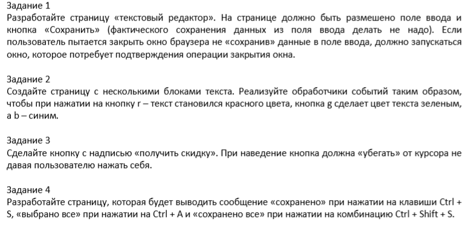

JavaSript
События в JavaSript
- События
- Задание для 11 и 12 урока.
Создать сайт по заказу пиццы используя семантическую верстку. (Пример https://dominos.ua/ru/kyiv/create/ )
На сайте должна быть возможность сделать пиццу самому.
При создании пиццы пользователь выбирает ингредиенты и размер пиццы. ( маленькая, средняя или большая). Ингредиенты ( сыр, пепперони, перец, кукуруза, ананасы и т.д) и также 3 вида соуса. При создании пиццы цена увеличивается. Все ингредиенты и коржи должны быть в виде картинок и накладываются друг на друга ( https://ru.wikipedia.org/wiki/Drag-and-drop ) при выборе в конце принять от пользователя телефон, email, имя и проверить на правильность введения. После чего весь результат заказа отправить на почту philipsevene@gmail.com.
Так же создайте банер получить скидку на пиццу 30% и сделайте чтобы банер от курсора пользователя убегал.
- Зделайте так, чтобы код с папки 03_events работал и отлавливал ошибки
- 